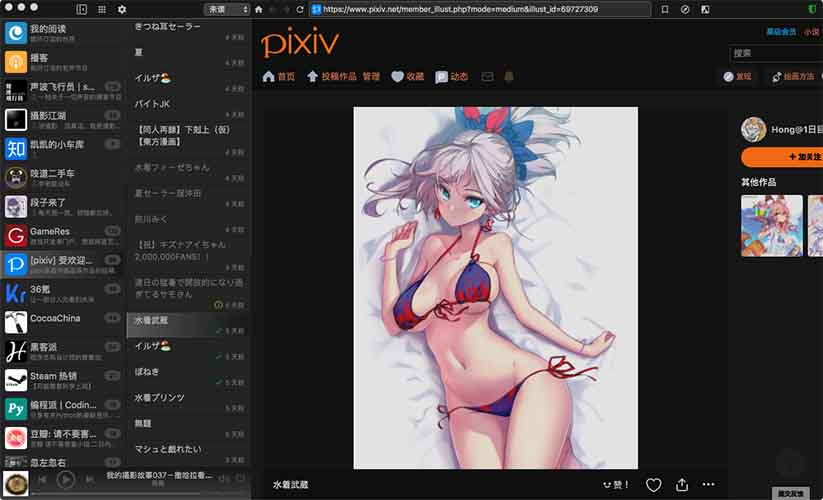

Netqon
irreader beta v1.4.0
订阅网页、RSS和Podcast，具备急速的阅读体验，
高品质、免费、无广告、多平台的RSS阅读器。
亦是泛用型Podcast播放器。
Downloads:
教程文档
Bilibili: irreader 进阶使用教程（by有格调网站）

irreader视频教程1：如何订阅pixiv的排行榜网页（bilibili)
irreader视频教程2：如何订阅任意github项目的issue列表
irreader视频教程3：如何订阅知乎的任意话题
教程4：官方图文版文档
版本记录
v1.4.0 2018年08月26日 1，增加了源的分组功能（文件夹）2，优化了阅读模式体验 4，其他优化和fix v1.3.0 2018年08月09日 1，增加了阅读模式，开启后，为您带来跨站点的统一的更沉浸的阅读体验。
2，预加载可设置档次，方便您减少能耗 3，优化了快捷键，更全，布局更舒服了 4，确保音视频不自动播放 5，默认不再打开提醒和开机启动 6，优化了任务栏小窗口，排序更正常 7，其他优化和bugfix，说不清楚
v1.2.0 2018年07月22日 1，支持动态网页的订阅； 2，支持设置主题；  3，优化了UI，源列表可以收缩； 4，源的导入与导出； 5，增加了清理缓存菜单项； 6，移除了JS和gif的blocking； 7，完整支持了AD Block Plus； 8，修复了其他的bug及各种优化； ⬇️ MacOS v1.2.0（历史版本） ⬇️ Windows(7,8,10) v1.2.0（历史版本） v1.1.1 2018年07月15日 1，修复添加自定义页面时，load fail的事件处理错误问题； v1.1.0 2018年07月13日 1，修改了网页订阅规则的设置方式，不再需要用户具有任何专业知识，小白也能轻松订阅； 2，优化了翻页表现，不再有白色的闪烁，眼睛更舒适； 3，修复了Win下滚动条的异常表现； 4，将翻页键和收藏键移动到了webview的下方； 5，修复了在网页未加载完全时，webview内右键菜单无法打开的问题； 6，增大了第二栏的字号； 7，其他优化和bug修复 v1.0.4 2018年07月08日 1，增加了深夜勿扰开关，在后半夜不再有提醒消息
App赞助
 OpenWebMonitor 监控网页内特定区域内容变化，获得Email提醒
（监控JD物价、监控Steam优惠、监控幼儿园招生通知、监控秒杀开始）
OpenWebMonitor 监控网页内特定区域内容变化，获得Email提醒
（监控JD物价、监控Steam优惠、监控幼儿园招生通知、监控秒杀开始）